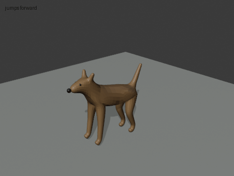
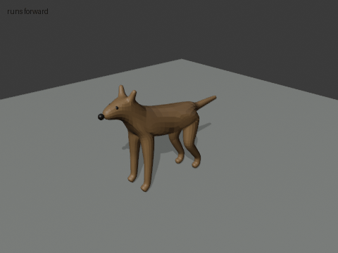
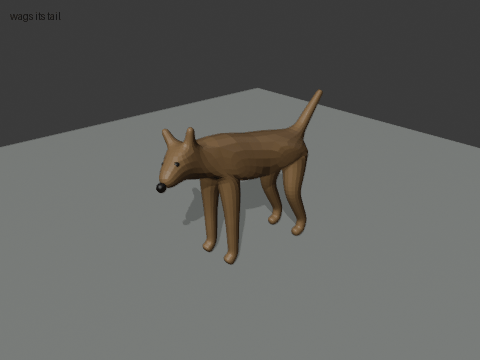
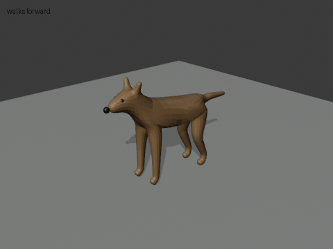
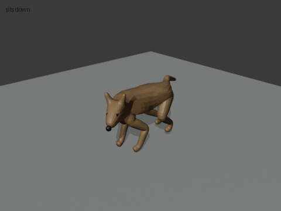
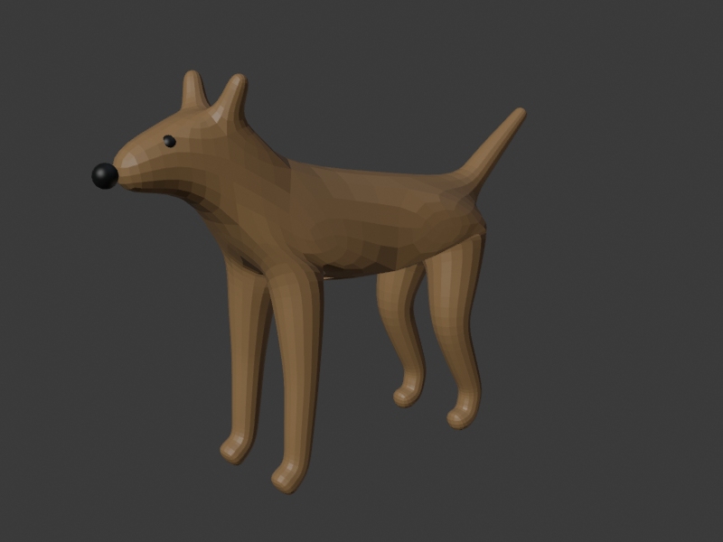

A home-made dog, animated by UniMate
I built and rigged this dog procedurally in Blender. UniMate, a text-to-motion model for any skeleton (SIGGRAPH Asia 2026), then generated each motion from a one-line prompt and ran it locally on an RTX 4060. Drag to orbit, scroll to zoom.
My dog
Repo examples
prompt: “an object jumps forward”
Motion clips





How it was made

- Model and rig. A Blender script builds a skin-modifier body plus a 27-bone skeleton (spine, neck, head, jaw, 3-bone tail, ears, 4 legs), then auto-weights it.
- Preprocess.
rig_preprocess --annotate rulelabels the bones and writes the skeleton conditioning,cond.npy. - Generate. The flow-matching model, with flan-t5 text conditioning and checkpoint step 150k, outputs 60 frames per prompt in about 20 s.
- Retarget.
animate_motion.pydrives the skinned mesh by FK and exports GLB and FBX.
Honest take
Works: it animates a skeleton it has never seen, with no training on dogs, from plain text. Limits: locomotion tends to stay on the spot, some samples miss (for example sit down), and it does no auto-rigging, so you still need a rigged model. Run a few samples per prompt and keep the best one.
Motions generated with UniMate (code MIT, checkpoints CC BY-NC 4.0, so this is for non-commercial use only). The eagle, shark and Unitree Go2 assets come from the UniMate repo examples. The dog model was built with build_dog.py.